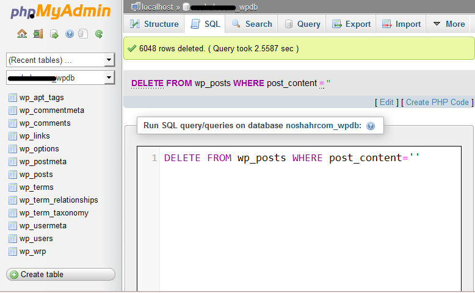

شاید شما هم مثل من سایت یا سایتهایی رو داشته باشید که بصورت خودکار از طریق آر اس اس محتوا تولید می کنند. اگه اینطور باشه حتما میدونید که گاهی به دلیل یک سری مشکلاتی که ممکنه برای آر اس اس منبع بوجود بیاد، پست های شما خالی از هرگونه متنی باشه. اگه بخوام بیشتر و راحت تر توضیح بدم میتونم بگم که بعد از مدتی شما تعداد زیادی پست دارید که یه تعدادی از اون ها (شاید حدود 10 تا 50 درصد یا حتی بیشتر!) خالی از متن هستند یعنی پلاگین شما فقط تونسته عنوان نوشته رو بخونه و برای دریافت متن به هر دلیلی با مشکل مواجه شده، در حال حاضر ما سعی می کنیم که این نوشته های خالی از متن رو پاک کنیم. برای حذف نوشته ها با ما همراه باشید…
توجه: لطفا قبل از حدف نوشته ها از دیتابیس خود بکاپ تهیه کنید.
با هم شروع می کنیم. از اونجایی که جستجوهای من برای پیدا کردن پلاگینی برای این منظور به نتیجه نرسید با هم این کار رو از طریق phpMyAdmin انجام میدیم. ابتدا وارد پنل مدیریت هاست خود شده، سپس وارد phpMyAdmin شوید. از سمت چپ نام دیتابیس خود را انتخاب کرده سپس از بالای صفحه بر روی SQL کلیک کنید. یکم توضیح شاید بد نباشه! اطلاعات نوشته های وردپرس در جدولی با نام “wp_posts” قرار دارند. در این جدول ستون های مختلفی قرار دارند که اطلاعات مربوط به محتوای نوشته ها در ستونی با نام “post_content” قرار داره. خب کار ما چک کردن این ستون در این جدول هست که درصورت خالی بودن اون رو پاک میکنه. البته لازم به ذکر هست که با این روش می توان در وردپرس چند کاربره هم عملیات پاک سازی پست های بدون متن رو انجام داد. البته روش نام گذاری در وردپرس مولتی یوزر به صورت “wp_<blog_number>_posts” است مثل “wp_6_posts”. با توجه به توضیحات گفته شده فکر نمی کنم سوال خاصی باقی مونده باشه. کد زیر تمام پست هایی رو که در قسمت محتوای اون ها هیچ متنی نباشه(بدون محتوا) رو پاک میکنه.
DELETE FROM wp_posts WHERE post_content=''
البته با توجه به توضیحات گفته شده برای وردپرس چندکاربره، با کد زیر می تونید نوشته های خالی رو از سایت مورد نظرتون پاک کنید.
DELETE FROM wp_6_posts WHERE post_content=''
عکس زیر نمونه کد اجرا شده برای سیستم استاندارد وردپرس هست. همونطور که می بینید این کد با موفقیت پست های خالی رو از وردپرس حذف کرده. موفق باشید. 